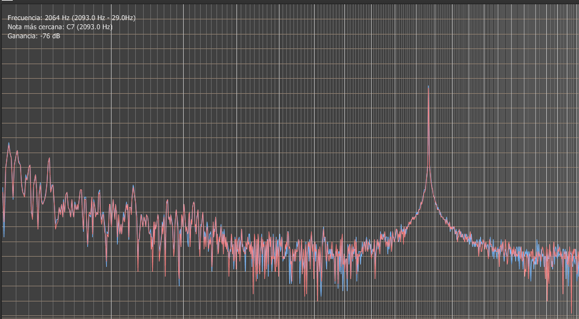

George Boole (1815-1864) matemático y filósofo inglés, fue conocido
por desarrollar el álgebra booleana, un sistema algebraico que utiliza valores binarios para la manipulación lógica. Nació en Lincoln, Inglaterra, y mostró un gran interés por las matemáticas desde temprana edad. A pesar de su falta de educación formal, Boole publicó varios trabajos sobre lógica matemática y teoría de la probabilidad.
En 1847, Boole publicó su obra más influyente, "El Análisis Matemático de la Lógica", donde propuso una nueva forma de razonamiento lógico que se basaba en la representación de proposiciones mediante símbolos matemáticos. Este trabajo fue fundamental para el desarrollo de la lógica moderna y la informática.
Boole también estuvo interesado en la educación y la moralidad, y publicó varios ensayos sobre estos temas. Fue profesor en la Universidad de Cork, en Irlanda, donde se destacó por su dedicación a la enseñanza y la formación de sus alumnos.
Desafortunadamente, Boole murió a los 49 años de edad, pero su legado en la lógica y la informática sigue siendo relevante en la actualidad.
Tarea 1: PAGINA WEB
Empezamos con la tarea1 que es el diseño de una página Web, para esto veamos las siguientes definiciones:
Lenguaje HTML
HTML (Hypertext Markup Language) es un lenguaje de marcado utilizado para crear páginas web. Es la base de la mayoría de los sitios web y se utiliza para definir la estructura y el contenido de una página web.
El lenguaje HTML se compone de una serie de etiquetas (tags) que se utilizan para definir el contenido de una página. Cada etiqueta tiene un nombre específico y se escribe entre corchetes angulares < >. Por ejemplo, la etiqueta
se utiliza para definir la sección de encabezado de una página, mientras que la etiqueta
se utiliza para definir un párrafo.
Además de las etiquetas, HTML también utiliza atributos para proporcionar información adicional sobre una etiqueta. Los atributos se agregan a las etiquetas y se utilizan para controlar el comportamiento y la apariencia del contenido en una página web. Por ejemplo, el atributo "href" se utiliza para definir un enlace a otra página o sitio web.
En conjunto, las etiquetas y atributos de HTML permiten a los desarrolladores web crear páginas web con una estructura y contenido bien definidos y organizados.
Estas etiquetas incluyen:
!DOCTYPE html: Esta etiqueta define el tipo de documento como un documento HTML5.
html: Esta etiqueta define el comienzo del documento HTML y envuelve todo el contenido de la página web.
head: Esta etiqueta contiene información sobre la página web que no se muestra en la pantalla, como el título de la página y los enlaces a hojas de estilo externas.
title: Esta etiqueta define el título de la página web que se muestra en la pestaña del navegador.
link: Esta etiqueta establece un enlace a una hoja de estilo externa que se utiliza para dar estilo a la página web.
body: Esta etiqueta contiene todo el contenido visible de la página web, como encabezados, párrafos, imágenes y otros elementos.
header: Esta etiqueta envuelve todo el contenido del encabezado de la página, que incluye el logo del sitio web, el título, el subtítulo y el menú de navegación.
img: Esta etiqueta se utiliza para insertar imágenes en la página web.
nav: Esta etiqueta se utiliza para definir una sección de navegación en la página web.
ul: Esta etiqueta define una lista sin orden en HTML.
li: Esta etiqueta se utiliza para crear elementos de lista en HTML.
a: Esta etiqueta se utiliza para crear un enlace a otra página web o archivo.
aside: Esta etiqueta define una sección de contenido secundario en la página web, como una barra lateral o un cuadro de contenido adicional.
article: Esta etiqueta se utiliza para envolver una sección de contenido independiente en la página web, como un artículo o una publicación de blog.
h1-h3: Estas etiquetas se utilizan para definir los encabezados de diferentes tamaños en la página web.
p: Esta etiqueta se utiliza para definir un párrafo de texto en la página web.
footer: Esta etiqueta envuelve el contenido del pie de página de la página web, que puede incluir información de derechos de autor o enlaces de contacto.
Lenguaje CSS
CSS (Cascading Style Sheets) es un lenguaje utilizado para definir la presentación visual de una página web, incluyendo el diseño, el color, la tipografía y otros aspectos de la apariencia de la página.
CSS se utiliza en combinación con HTML para separar la presentación visual del contenido de una página web. Es decir, mientras que HTML se utiliza para definir la estructura y el contenido de una página, CSS se utiliza para definir cómo se presenta ese contenido.
CSS utiliza una serie de reglas que se aplican a los elementos de una página web para controlar su estilo y apariencia. Cada regla se compone de un selector que define el elemento al que se aplica la regla y un conjunto de propiedades que definen cómo se presenta el elemento
En conjunto, HTML y CSS se utilizan para crear páginas web visualmente atractivas y bien estructuradas. HTML define la estructura y el contenido de la página, mientras que CSS define
su apariencia y estilo.
Algunos de los elementos que se definen son:
El estilo general de la página, que incluye el tipo de fuente, tamaño de fuente, color de texto, etc.
El contenedor principal de la página, que tiene una anchura máxima de 1200 píxeles, se centra horizontalmente y utiliza el sistema de diseño flexible Flexbox.
El encabezado de la página, que tiene un fondo de color #333, texto de color blanco y un logotipo flotante a la izquierda. La navegación está contenida en una barra de navegación que tiene un fondo de color darkcyan y utiliza Flexbox para distribuir los elementos horizontalmente.
El contenido principal de la página, que se divide en un aside (barra lateral) y un article (área principal). El aside tiene un fondo de color #eee, un tamaño flexible y contiene enlaces a otras páginas. El article tiene un margen izquierdo y derecho del 2% y un ancho del 66%. También contiene un texto de biografía que utiliza una fuente de escritura a mano y un tamaño de fuente grande. Además, hay algunas clases de foto que definen la apariencia de ciertas imágenes en el article.
El pie de página de la página, que tiene un fondo de color #333, texto de color blanco y está centrado horizontalmente.
Lenguaje JavaScript:
JavaScript es un lenguaje de programación interpretado que se utiliza para crear interactividad en las páginas web y para desarrollar aplicaciones web. Es uno de los lenguajes de programación más populares del mundo y se utiliza tanto en el lado del cliente (navegador web) como en el lado del servidor (con Node.js).
JavaScript se utiliza para controlar el comportamiento de los elementos HTML y CSS en una página web. Con JavaScript, los desarrolladores web pueden crear eventos interactivos, animaciones, formularios dinámicos y otras características interactivas en una página web.
JavaScript es un lenguaje de programación orientado a objetos y basado en prototipos. Utiliza variables, operadores, estructuras de control de flujo y funciones para crear programas y aplicaciones.
Para la pagina web se ve un bloque de código de JavaScript que define cinco funciones que se llaman "mostrarcrucero", "mostrarvelocidad", "mostrarposicion", "mostrarsuspension" y "mostrarpendulo". Cada función utiliza la función "querySelector" para seleccionar una serie de elementos de la página web que tienen una dirección URL específica de imagen.
Luego, cada función verifica si cada uno de los elementos seleccionados tiene la propiedad "display" establecida en "none", lo que significa que la imagen no se muestra actualmente en la página web. Si es así, establece la propiedad "display" en "block", lo que hace que la imagen sea visible en la página web. Si la imagen ya está visible, la función cambia la propiedad "display" a "none", lo que oculta la imagen.
Estas funciones se pueden llamar desde algún evento o botón en la página web para cambiar la visibilidad de un grupo de imágenes que representan diferentes características de un objeto. Por ejemplo, "mostrarcrucero" podría mostrar imágenes que representan diferentes partes de un crucero, mientras que "mostrarvelocidad" podría mostrar imágenes que representan diferentes velocidades de un vehículo.
Tareas 2:CARACTERIZACION DE AUDIFONO
Todos tenemos pabellones auriculares distintos, por lo que existen diversos diseños de auriculares. Algunos de ellos pueden resultar muy cómodos para ciertas personas; mientras que para otras pueden resultar muy incómodos. El uso que vayamos a darles será un factor determinante a la hora de hacer la elección correcta.
- In-Ear
Los auriculares In-Ear son los que se introducen en el oído. Estos auriculares aíslan del sonido exterior, mejoran la calidad del audio, y son de pequeño tamaño.
Over-Ear y On-Ear
Los auriculares Over-Ear y los OnEar tienen muchas similitudes. La principal diferencia es que los OverEar apoyan en la cabeza, mientras los On-Ear apoyan en la oreja. Estos últimos aíslan menos del ruido exterior, y tienen unos graves menos profundos. Los auriculares circumaurales (Over-Ear) rodean completamente la oreja, y cuando son cerrados, permiten el aislamiento sonoro casi por completo. Generan una mayor sensación natural del campo estéreo y una reproducción de frecuencias de sonido más lineal y precisa. Los auriculares supraurales (OnEar) tienen almohadillas que se apoyan en la parte externa del pabellón auricular (oreja). Son más pequeños, más ligeros y por lo tanto más fáciles de transportar, y son muy adecuados para utilizar con dispositivos móviles. Debido a que este tipo de auriculares se apoya en los pliegues y las crestas del pabellón auditivo, el aislamiento acústico es menor que con un audífono circumaural, y hay una mayor variabilidad en la respuesta a las frecuencias graves.
-Cerrados
Poseen una cámara cerrada detrás del transductor que sella herméticamente el sonido. Proporcionan aislamiento del ruido exterior, por lo que pueden ser utilizados en ambientes ruidosos, suelen realzar las frecuencias bajas del sonido ya que el espacio entre el diafragma y la membrana timpánica es “cerrado“.
-Abiertos
Los auriculares abiertos permiten la salida de sonido desde la parte trasera del transductor a través de la almohadilla/rejilla frecen también una mejor respuesta a los transitorios (con qué rapidez el transductor puede reaccionar a los cambios en el material fuente). Debido a la menor presión sobre la parte posterior del transductor, éste puede reaccionar más rápidamente a los cambios en la señal. Esto mejora la precisión y asegura que incluso los sutiles sonidos de menor nivel podrán ser escuchados con toda claridad.
Los transductores:
Los transductores transforman la energía. En el caso de los auriculares convierten la señal de audio (energía electromagnética) en sonido (energía mecánica). De forma general, la calidad de sonido de un auricular está relacionada con el tamaño de la caja acústica, el área en la que se almacena el altavoz y otros componentes electrónicos del auricular. Cuanto mayor sea el tamaño del auricular, mejor será en términos de frecuencia, potencia, sensibilidad, impedancia y respuesta de frecuencia.
AUDIFONO SONIA SN-288MV
Especificaciones Técnicas:
Especificaciones del micrófono:
La especificación "micrófono 6x5/58 +-2dB" se refiere a las características técnicas del micrófono. Aquí está el desglose de cada término:
"Micrófono": se refiere al dispositivo que convierte el sonido en una señal eléctrica.
"6x5": se refiere al patrón de captación del micrófono, es decir, la dirección en la que el micrófono puede recoger el sonido. En este caso, "6x5" indica que el micrófono tiene una cápsula de 6mm de diámetro y una longitud de 5mm.
"58": Hace la referencia al modelo.
"+-2dB": se refiere a la sensibilidad del micrófono, que mide la cantidad de señal eléctrica que se produce en respuesta a un nivel determinado de sonido. El "+-2dB" indica que la sensibilidad del micrófono varía en +/-2 decibelios, lo que significa que puede capturar sonidos con un nivel de intensidad diferente en un rango de +/-2 decibelios.
El rango de frecuencia de un micrófono 58 es típicamente de 50 Hz a 15 kHz, lo que significa que puede capturar sonidos dentro de ese rango de frecuencia con una precisión de ±2dB. Esto es una especificación común para muchos micrófonos de alta calidad, lo que significa que el micrófono será capaz de capturar sonidos con una alta fidelidad.
Para comprobar experimentalmente la sensibilidad del micrófono, necesitarás un medidor de nivel de sonido y una fuente de sonido controlada. Aquí hay algunos pasos a seguir:
Conecta el micrófono al medidor de nivel de sonido utilizando un cable adecuado. Asegúrate de que el medidor de nivel de sonido esté configurado para medir el nivel de presión sonora (SPL) en decibelios.
Coloca el micrófono en una posición fija, apuntando hacia la fuente de sonido. La distancia entre el micrófono y la fuente de sonido debe ser constante.
Ajusta la fuente de sonido para producir un nivel de sonido constante. Puedes usar una señal de prueba estándar o una fuente de sonido controlada para garantizar la estabilidad del nivel de sonido.
Registra el nivel de presión sonora (SPL) en el medidor de nivel de sonido.
Ahora, ajusta la fuente de sonido para producir un nivel de sonido diferente, por ejemplo, 2 dB más alto que el nivel anterior.
Como medidor se usa el analizador de frecuan MyRio y MyDac, asi tambien podemos usar la tarjeta de sonido de la PC para analizar por medio de MATLAB u otro programa que permita medir las frecuencias.
Registra el nuevo nivel de presión sonora (SPL) en el medidor de nivel de sonido.
Resta el segundo nivel de presión sonora registrado del primer nivel registrado. El resultado debe ser igual a la sensibilidad del micrófono.
Por ejemplo, si el primer nivel de presión sonora registrado es de 80 dB SPL y el segundo nivel es de 82 dB SPL, la sensibilidad del micrófono sería de 2 dB. Si la especificación del micrófono indica que la sensibilidad varía en +/-2dB, entonces la medición experimental está dentro de las especificaciones del micrófono.
El osciloscopio no es la herramienta adecuada para medir el nivel de sonido, ya que no está diseñado específicamente para medir la presión sonora. El osciloscopio se utiliza para visualizar señales eléctricas y no puede medir la amplitud de la señal acústica directamente.
Para medir la presión sonora de manera precisa, se recomienda utilizar un medidor de nivel de sonido, como un sonómetro o un medidor de decibelios, ya que están diseñados específicamente para medir la presión sonora en decibelios (dB).
Gráfica del micrófono
Especificaciones del auricular:
Impedancia: se refiere a la resistencia eléctrica que ofrece el auricular a la corriente eléctrica que fluye a través de él, y se mide en ohmios (Ω). En este caso, la impedancia está especificada a 1 kHz, lo que significa que la impedancia del auricular puede variar a diferentes frecuencias, pero en 1 kHz es de un valor determinado. La impedancia es importante para asegurarse de que el auricular sea compatible con el dispositivo de audio al que se va a conectar.
la medición con un multímetro:
Asegúrate de que el auricular esté desconectado de cualquier fuente de alimentación o dispositivo de audio.
Conecta las puntas de prueba del multímetro en los terminales del auricular. La punta negra debe conectarse al terminal negativo (-) y la punta roja al terminal positivo (+).
Configura el multímetro para medir la impedancia. Algunos multímetros tienen una función específica para medir la impedancia, mientras que otros tienen una función de resistencia que también puede utilizarse para medir la impedancia. En cualquier caso, asegúrate de seleccionar la unidad de medida en ohmios (Ω).
Lee el valor de la impedancia en el multímetro. La impedancia medida puede variar ligeramente a diferentes frecuencias, por lo que es importante medirla a la frecuencia especificada (en este caso, 1 kHz).
Es importante tener en cuenta que la impedancia del auricular puede variar ligeramente dependiendo de la frecuencia, por lo que la medición debe realizarse a la frecuencia especificada en las especificaciones del auricular. Además, la impedancia también puede variar dependiendo de la forma en que se mide, por lo que los resultados pueden variar ligeramente entre diferentes métodos de medición.
Sensibilidad: se refiere a la eficiencia con la que el auricular convierte la señal eléctrica en sonido audible, y se mide en decibelios (dB) por milivatio (mW) de potencia eléctrica. En este caso, la sensibilidad del auricular es de 105 dB/mW, lo que significa que produce un nivel de presión sonora de 105 dB cuando se le suministra una potencia eléctrica de 1 mW. Una sensibilidad más alta significa que el auricular es más eficiente y puede producir un nivel de sonido más alto con menos potencia eléctrica.
Para medir experimentalmente la sensibilidad de un auricular, se puede utilizar un equipo de medición de nivel de presión sonora y un generador de señal de audio.
Pasos para realizar la medición:
Conecta el auricular al generador de señal de audio. Asegúrate de que la fuente de audio esté configurada para reproducir una señal de audio constante y sin distorsión. También asegúrate de que la impedancia de salida del generador de señal de audio sea compatible con la impedancia del auricular.
Conecta el equipo de medición de nivel de presión sonora al auricular. Asegúrate de que el micrófono del equipo de medición esté posicionado de manera adecuada y estable cerca del auricular.
Ajusta el generador de señal de audio para que genere una señal a un nivel de potencia conocido, por ejemplo, 1 mW. También asegúrate de que la señal esté en el rango de frecuencia especificado por el auricular.
Enciende el equipo de medición de nivel de presión sonora y registra el nivel de presión sonora producido por el auricular. Este valor debe estar en decibelios (dB).
Calcula la sensibilidad del auricular utilizando la siguiente fórmula:
Sensibilidad (dB/mW) = Nivel de presión sonora medido (dB) - Nivel de referencia (dB) + 10 * log (Potencia de referencia / Potencia de entrada)
Donde:
Nivel de referencia: Es el nivel de presión sonora de referencia utilizado para la medición. En general, se utiliza un nivel de referencia de 20 microPascals (μPa).
Potencia de referencia: Es la potencia de referencia utilizada para la medición. En general, se utiliza una potencia de referencia de 1 mW.
Potencia de entrada: Es la potencia de entrada de la señal de audio en el auricular, medida en mW.
Es importante tener en cuenta que la sensibilidad del auricular puede variar dependiendo de la forma en que se mide, por lo que los resultados pueden variar ligeramente entre diferentes métodos de medición. Además, la sensibilidad también puede variar dependiendo de la impedancia de carga y la frecuencia de la señal de audio, por lo que es importante realizar la medición en condiciones controladas y según las especificaciones del auricular.
La sensibilidad de un auricular se refiere a la cantidad de nivel de presión sonora que se produce en el oído del usuario en respuesta a una señal de audio de una determinada potencia. Esta medición requiere un equipo de medición de nivel de presión sonora, como un sonómetro, y un generador de señal de audio para generar la señal de prueba.
Es importante tener en cuenta que la sensibilidad del auricular puede variar según la impedancia de carga y la frecuencia de la señal de audio, por lo que es importante realizar la medición en condiciones controladas y según las especificaciones del auricular
Respuesta en frecuencia: se refiere al rango de frecuencias de sonido que el auricular puede reproducir con precisión, y se mide en hertz (Hz). En este caso, el auricular tiene una respuesta en frecuencia de 20 Hz a 22 kHz, lo que significa que puede reproducir sonidos en el rango de frecuencia audible para el oído humano (20 Hz a 20 kHz) y algunos sonidos de frecuencia más alta.
Es posible utilizar un osciloscopio para medir la respuesta en frecuencia de un dispositivo, como un auricular, pero la precisión de esta medición dependerá de la configuración del osciloscopio y de los métodos de medición utilizados.
Veamos algunas mediciones obtenidas:
Prueba a 400Hz (audífono)
Prueba a 800Hz (audífono)
Prueba a 2000Hz (audífono)

Prueba a 4500Hz (audífono)
Prueba a 13000Hz (audífono)
Tarea 3:CARACTERIZACION DE 7 PLANTAS
Las plantas propuestas del tutorial de Control para Matlab y Simulink de las universidades Universidades Carnegie Mellon y Michigan, que tiene la siguiente direccion: http://ctms.engin.umich.edu/CTMS/index.php?aux=Home
Tarea 4:Un sistema SCADA tiene base de datos?
Un sistema SCADA (Supervisory Control and Data Acquisition) típicamente tiene una base de datos para almacenar y gestionar los datos que se recogen de los procesos industriales que supervisa y controla.
La base de datos en un sistema SCADA puede contener información como valores de sensores, estados de equipos, registros de eventos y alarmas, datos de producción, entre otros. Esta información se utiliza para controlar y monitorear los procesos industriales en tiempo real y para realizar análisis históricos de los datos.
La base de datos en un sistema SCADA puede ser interna o externa al sistema, y puede ser gestionada por el propio software SCADA o por otro software de gestión de bases de datos. La elección de la base de datos dependerá del tipo de aplicación, la cantidad de datos que se espera almacenar y la frecuencia con la que se accederá a ellos.
Ejemplos de sistemas SCADA y la base de datos que utilizan: Sistema SCADA de un sistema eléctrico, usando Wireless
Sistema SCADA para una central eléctrica: la base de datos puede contener información sobre el voltaje y la corriente de los generadores, el flujo de energía, la temperatura de los equipos, entre otros. Sistema SCADA de un sistema quimico
Sistema SCADA para una planta química: la base de datos puede contener información sobre la presión, la temperatura, la cantidad de líquidos y gases en el proceso, las condiciones ambientales, etc.
Sistema SCADA de distribucion de agua
Sistema SCADA para una red de distribución de agua: la base de datos puede contener información sobre el nivel de agua en los tanques, la presión en las tuberías, la calidad del agua, el consumo de agua, etc.
En todos estos casos, la base de datos es esencial para el correcto funcionamiento del sistema SCADA y la toma de decisiones en tiempo real basadas en los datos recopilados. Además, esta información también se puede utilizar para realizar análisis históricos y mejorar la eficiencia de los procesos.
Tarea 5: ESTACION METEREOLOGICA
Presentamos como nombre de la empresa "SKYSENSE" porque tramos de identificarnos como una empresa confiable y capacitada para proporcionar información precisa sobre el clima y el tiempo.
INSTALACION ESTACION METEREOLOGICA EN JARDIN
Ventajas:
- Es necesario utilizar trípodes, postes para el adecuado posicionamiento de los sensores
- Fácil instalación.
- Fácil acceso a los sensores, para su mantenimiento. Desventajas:
- Los sensores deben evitar áreas sombreadas.
- El espacio debe ser grande y sin obstrucciones.
SENSORES:
- Anemómetro (Mide la velocidad y dirección del viento).
- Debe estar a una altura de 2 a 3 metros del suelo.
- Debe estar a 2.1 metros por encima de cualquier obstruccion.
Star Screen
- Brinda información meteorológica como temperatura, humedad, velocidad y dirección del viento.
- Los datos se transmiten de forma inalámbrica desde los sensores hasta la consola que es compacto y ligero.
- Sensores para la temperatura, humedad, presión de aire velocidad y dirección del viento.
Consideraciones:
Aspersores y sistemas de riego.
Controlar que cuando funcionen no salpican a los sensores y puedan afectar al valor de los datos en cualquier sentido.
Pájaros, roedores y otros animales.
Proteja y mantenga alejado a cualquier animalillo que pueda sentir curiosidad, hambre por su estación meteorológica, con una valla metálica alrededor.
Nivelación.
Utilice un nivel para nivelar la estación, así de esta forma se asegurará de que está bien instalada. Compruebe la nivelación recurrentemente sobre todo después de días de mucho viento o bien si se percata de algún dato repetitivo en la dirección del viento.
Panel solar.
Si su estación meteorológica tiene panel solar que alimenta a los sensores deberá instalarlo con una adecuada orientación para aprovechar al máximo las horas de luz, para su uso.
PRESUPUESTO DE UNA PAGINA WEB
Precio de diseño y planificación: 500$
En Bolivia el costo medio de desarrollo del front-end es entre $1000-$1500 y como la página web tendrá poca integración de imágenes y medios el costo disminuirá, si se crearan formularios y se implementara interfaz de usuarios básica y el tiempo de desarrollo serán de 15 dias y el desarrollador cobrara el mínimo por la poca experiencia que tiene.
Precio Front-End :1000$
La cotización estimada en base al mercado global de esta fase será de entre 500$ a 1000$ y en base a la experiencia del desarrollador el costo será el mínimo. Y el tiempo de desarrollo del back-end será de 20 dias.
Precio final: 2200$ con un tiempo de desarrollo de 35 dias.
Pruebas y Despliegue: Este costo incluye las pruebas de compatibilidad y de rendimiento en diferentes dispositivos y navegadores, la corrección de errores y problemas encontrados durante las pruebas, y el despliegue de la página web en el servidor y la configuración del dominio. Esta fase es necesaria para asegurarse de que la página web esté disponible y funcione correctamente para los usuarios.
La cotización estimada en base al mercado global de esta fase será de entre 200$ a 500$ y en base a la experiencia del desarrollador el costo será el mínimo. Y el tiempo estimado de las pruebas y despliegue será de 10 días. SERVICIO DE MANTENIMIENTO
Servicio técnico 278 $
La operación de una Red de Estaciones Hidrometeorológicas, implica diversas tareas y actividades por el personal capacitado, los cuales garanticen la correcta manipulación de los sensores así también la adecuada adquisición de los datos generados y almacenados.
Servicio de transporte 100 $
En condiciones de cambios fuertes del clima se debe desarrollar el mantenimiento cada 2 meses.
 Lenguaje HTML
Lenguaje HTML  Lenguaje CSS
Lenguaje CSS Lenguaje JavaScript:
Lenguaje JavaScript: